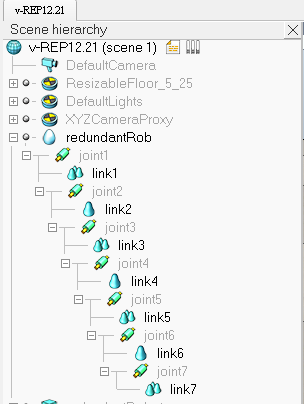

Week14~15
本週進度為V-REP的操作練習
進入mde.tw >cpdgx >右邊的 課程專題>電腦輔助設計議題>參考連結裡的第一個網址
點進去後會看到一篇令人頭疼的英文操作教學
↓↓↓就讓我們來看看這篇再說什麼吧↓↓↓
操作步驟 :
1.點選 [Menu bar --> File --> Import --> Mesh...]，開啟名為"redundantManipulator.stl"的檔案
2.開啟後會發現點擊機械手臂時，機械手臂為一個整體，各部位零件是無法單一選取的，因此為了方便後續操作須先將此手臂"分解"
點選[Menu bar --> Edit --> Grouping/Merging --> Divide selected shapes]及完成。
3.接下來可以依照自己喜好設定機械手臂的外觀顏色，雙擊所要更改的零件，點選"Adjust color"
4.設定完顏色之後，我們要來將各零件與絕對參考框架對齊，選取全部零件後，點選[Menu bar --> Edit --> Bounding box alignment --> Align selected shapes' coordinate frame with world]
5.再來便是新增7個旋轉軸，點選[Menu bar --> Add --> Joint --> Revolute]將呼叫出之旋轉軸位置設定在(0，0，0)，ctrl選取機械手臂的基座與旋轉軸打開position dialog裡的position，點選Apply to selection，便成功將第一個旋轉軸定位，總共為七個轉軸，重複此步驟即可，另外，有些轉軸的方向是錯誤的，開啟orientation dialog 裡面的orientation，將轉軸轉至正確方向。
6.調整轉軸長度及直徑
7.最一開始我們分解了我有零件，現在我們則要將部分零件組合成為一個零件，便是圖中更改顏色的部分，每部分有五個零件，將之選取，點選[Menu bar --> Edit --> Grouping/Merging --> Group selected shapes]，重複此步驟直至四部份的零件都組合在一起，另外桿臂的部分則是由[Menu bar --> Edit --> Grouping/Merging --> Merge selected shapes]方法組合。
(目前研究進度到這邊，之後會再把進度補上，並完成)
------------------------------------------------------------------------------------------
12/21 更新
8.將零碎的零件組合成小部件，總共會有七個，重新命名為"redundantRob_link1~redundantRob_link7"
七個旋轉軸則命名為"redundantRob_joint1~redundantRob_joint7"
並將左方欄位支連件順序以一個部件接一個旋轉軸的方式組合，如下圖

9.選取全部旋轉軸，開啟旋轉軸對話框，將mode更改成"inverse kinematics"

再來切換到common，將以打勾的圖層2取消，改成圖層10
10.新噌一個dummy，命名為"redundantRob_tip"並將其位置設在(0.324,0.62)，然後將此dummy與redundantRob_link7組合，[Menu bar --> Edit --> Make last selected object parent]
複製此dummy並將其命名為"redundantRob_target"雙擊"redundantRob_target"
將內容更改成如下圖
設定完成之後target與tip之間會有一條紅線將他們相連。
11.接著，打開inverse kinematics dialog，點擊Add new IK group，跑出一個"IK_Group"之後點取它，再點下面的Edit IK elements按鈕，在 IK group視窗裡，選擇"redundantRob_tip"再點擊Add new IK element with tip按鈕，更改其內容，如下圖

更改完之後再出來修改inverse kinematics dialog裡面的內容。如下圖
12.新增"manipulation sphere"來控制積血手臂， [Menu bar --> Add --> Primitive shape --> Sphere] ，分別將xyz的尺寸都設為0.05，將以打勾的Create dynamic and respondable shape選項取消，點選ok
重新命名"redundantRob_manipSphere"後將它與target結合
Week11 << Previous Next >> Week16